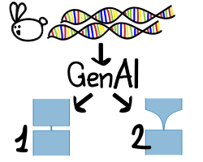
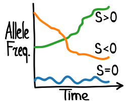
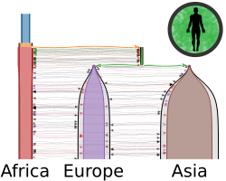

<div class="container">
    <div class="row">
        <div class="col-sm-4" style="padding-left:0rem;">

<center>


<h1 class="h4"> Ekaterina (Katya) Noskova </h1>
<p>PhD in Engineering</p>
<p>
<a class="text-dark" href="https://sites.google.com/view/lohselab/home"> MSCA Postdoctoral Fellow </a> <br>
<a class="text-dark" href="https://biology.ed.ac.uk/ecology-evolution"> University of Edinburgh </a> <br>
</p>
<p>
    <span class="fa fa-map-marker" aria-hidden="true"></span> Edinburgh, United Kingdom
    <br>
    <span class="fa fa-envelope" aria-hidden="true"></span> <span style="display: inline-flex; align-items: center; gap: 0;">ekaterina.e.noskova{% include social_icons/at.svg %}gmail.com</span><p>
<a  class="text-dark"  href="https://scholar.google.com/citations?user=1Mlxh7wAAAAJ&hl=en">
{% include social_icons/google-scholar.svg %}
      </a>
<a  class="text-dark"  href="https://github.com/noscode">
{% include social_icons/github.svg %}
      </a>
<a  class="text-dark" href="https://www.linkedin.com/in/ekaterina-noskova-286bb4186/">
{% include social_icons/linkedin.svg %}
      </a>
<a  class="text-dark" href="https://docs.google.com/document/d/1llL1UnAyGb7qaDCdmXz4d600bDfb5H630ta2niz2_JE/export?format=pdf">
{% include social_icons/CV.svg %}
      </a>

</p>
</center>
</div>
<div class="col-sm-8" style="padding-left:0rem;">
<div>
<h2 class="h2">About me</h2>
<p>I am a computational biologist and software engineer, currently holding a <strong>Marie Skłodowska-Curie Actions (MSCA) Postdoctoral Fellowship </strong> at the University of Edinburgh, hosted by <a class="text-dark font-weight-bold" href="https://sites.google.com/view/lohselab/people/konrad-lohse">Dr. K. Lohse</a>. My research combines <strong>generative AI, mathematical modeling, and software engineering</strong> to develop new methods and algorithms for solving complex problems in evolutionary biology.</p>

<p>Before Edinburgh, I was a postdoc at <strong>ETH Zürich</strong> in the group of <a class="text-dark font-weight-bold" href="https://usys.ethz.ch/en/people/profile.alex-widmer.html">Prof. Dr. A. Widmer</a> and at the <strong>University of Fribourg</strong> with <a class="text-dark font-weight-bold" href="https://www.unifr.ch/bio/en/groups/wegmann/">Prof. Dr. D. Wegmann</a>. I received my <strong>PhD in Engineering</strong> from ITMO University in 2023.</p>

</p>I believe it is essential not only to develop novel methods, but to deliver them as accessible, user-friendly software. I am the lead developer and active maintainer of the award-winning software <a class="text-dark font-weight-bold" href="https://github.com/ctlab/GADMA">GADMA</a> for easy-to-use demographic inference. Moreover, I contribute to community-driven software like <strong>stdpopsim</strong> and <strong>demes</strong> within the <a class="text-dark font-weight-bold" href="https://github.com/popsim-consortium">PopSim consortium</a>.
To empower researchers to leverage these tools, I organize and teach the annual <a class="text-dark font-weight-bold" href="https://gadmaworkshop.github.io/">Workshop on Demographic Inference</a>.
</p>
<p>
Outside of research, I love making science visually accessible. You will often catch me doodling bunnies to explain demographic histories or creating other <strong>bizarre illustrations</strong> for my talks!
</p>

<h2 class="h2">Research</h2>
<!-- PROJECT 1: Generative AI -->
<div style="display: flex; align-items: center; margin-bottom: 2rem;">
  <div style="flex-shrink: 0; width: 150px; margin-right: 20px;">
    
  </div>
  <div style="flex-grow: 1;">
	 <h5 style="margin-top: 0; margin-bottom: 0.5rem; font-weight: bold;">Generative AI for Demographic Identifiability</h5>
        <p style="margin-bottom: 0;">Developing a generative AI approach to solve the non-identifiability problem in demographic inference. My goal is to deliver a pretrained, ready-to-use AI model. It will discover alternative histories that fit the genetic data equally well — in just seconds. <em>(MSCA Project)</em></p>
	<div style="margin-top: 0.5rem;">
      <span style="display: inline-block; padding: 0.25rem 0.6rem; font-size: 0.85em; color: #6c757d; background-color: #f8f9fa; border: 1px solid #dee2e6; border-radius: 4px;">
        ⚙️ Model in active development
      </span>
    </div>  </div>
</div>

<!-- PROJECT 2: SweepLink -->
<div style="display: flex; align-items: center; margin-bottom: 2rem;">
  <div style="flex-shrink: 0; width: 150px; margin-right: 20px;">
	  
  </div>
  <div style="flex-grow: 1;">
    <h5 style="margin-top: 0; margin-bottom: 0.5rem; font-weight: bold;">Inference of Linked Selection from Time-Series Data</h5>
    <p style="margin-bottom: 0;">Developed <strong>SweepLink</strong>, a two-layer Hidden Markov Model framework for the joint inference of linked selection and demography. By explicitly modeling both time and genomic linkage, it achieves state-of-the-art accuracy and detection power for weak selection—a challenging regime for joint inference.</p>
    <div  style="margin-top: 0.5rem; display: flex; align-items: baseline;">
      <a href="https://bitbucket.org/wegmannlab/sweeplink/" class="btn btn-sm btn-outline-dark mr-2 mb-2" target="_blank">Code</a> 
      <a href="https://sweeplink.readthedocs.io" class="btn btn-sm btn-outline-dark mr-2 mb-2" target="_blank">Documentation</a>
      <span style="display: inline-block; padding: 0.25rem 0.6rem; font-size: 0.85em; color: #6c757d; background-color: #f8f9fa; border: 1px solid #dee2e6; border-radius: 4px;">
        📄 Manuscript in prep
      </span>
    </div>
  </div>
</div>

<!-- PROJECT 3: GADMA -->
<div style="display: flex; align-items: center;">
  <div style="flex-shrink: 0; width: 150px; margin-right: 20px;">
	  
  </div>
  <div style="flex-grow: 1;">
    <h5 style="margin-top: 0; margin-bottom: 0.5rem; font-weight: bold;">Automated Demographic Inference</h5>
    <p style="margin-bottom: 0;">Engineered <strong>GADMA</strong> by developing global optimization algorithms and novel dynamic size-change models for unsupervised demographic inference. This work was supported by a System Biology Fellowship and won a Bronze Humies Award at GECCO and 2nd place at the GHIST 2024 inference tournament.</p>
    <div  style="margin-top: 0.5rem;">
      <a href="https://github.com/ctlab/GADMA" class="btn btn-sm btn-outline-dark mr-2 mb-2" target="_blank">Code</a> 
      <a href="https://gadma.readthedocs.io" class="btn btn-sm btn-outline-dark mr-2 mb-2" target="_blank">Documentation</a>
      <a href="https://gadmaworkshop.github.io" class="btn btn-sm btn-outline-dark mr-2 mb-2" target="_blank">Workshops</a>
      <a href="https://doi.org/10.1093/gigascience/giad059" class="btn btn-sm btn-outline-dark mr-2 mb-2" target="_blank">Paper (GADMA2)</a>
    </div>
  </div>
</div>

<!-- PROJECT 4: Tetraploids -->
<!--
<div style="display: flex; align-items: center; margin-bottom: 2rem;">
  <div style="flex-shrink: 0; width: 150px; margin-right: 20px;">
	  
  </div>
  <div style="flex-grow: 1;">
    <h5 style="margin-top: 0; margin-bottom: 0.5rem; font-weight: bold;">Demographic Inference for Polyploids</h5>
    <p style="margin-bottom: 0;">During my postdoc at ETH Zürich, I developed novel demographic models to capture a wide variety of complex polyploidy formation scenarios. I am currently extending these frameworks to not only classify polyploid formation, but to detect auto- versus allopolyploid origins across the genome—an advancement beyond current existing tools.</p>
    <div style="margin-top: 0.5rem;">
      <span style="display: inline-block; padding: 0.25rem 0.6rem; font-size: 0.85em; color: #6c757d; background-color: #f8f9fa; border: 1px solid #dee2e6; border-radius: 4px;">
        ⚙️  Method in development
      </span>
    </div>
  </div>
</div>
-->
        </div>
    </div>

</div>
